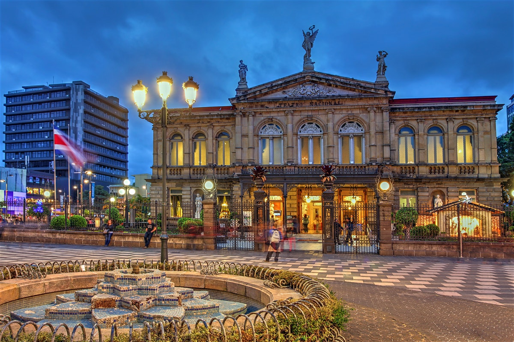

San José
San José es la provincia número 1 de Costa Rica. Se encuentra ubicada en el centro del país. Limita con las provincias de Alajuela, Heredia, Cartago, Limón y Puntarenas. Posee una superficie de 4.965,9 km², y una población de 1.633.282 habitantes, la más poblada del país.
 Volver